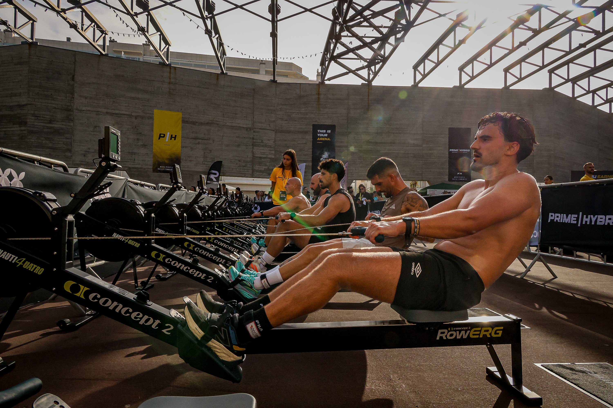
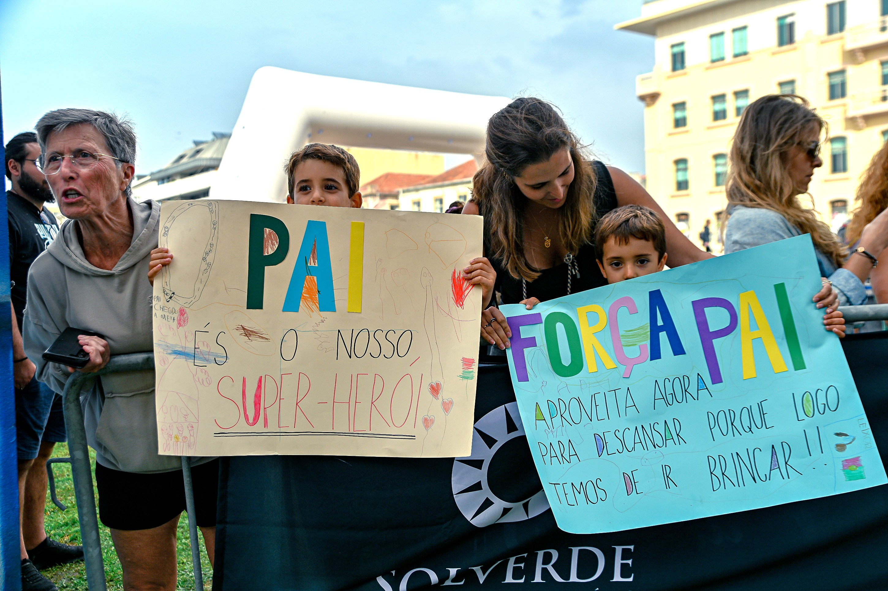

Prime Hybrid transformed Praça Progresso and central Espinho into an outdoor fitness-racing arena on 26 September, staging what organisers described as Portugal’s first fully urban hybrid race.
The format alternated eight one-kilometre urban running segments with eight functional stations: Ski Erg, Sled Push, Sled Pull, Burpee Broad Jump, Rowing, Farmers Carry, Sandbag Lunges and Wall Balls.

A city-centre test of pace and power
The programme included Open and Pro races for individual athletes and doubles, with men’s, women’s and mixed fields. A Liga Associativa also opened the course to local organisations including firefighters, police, armed forces, clubs and associations.
From the first heats at 08:00 to the awards at 18:00, the compact city-centre course kept the competition close to the public. The finish arch, workout stations and handmade signs turned Praça Progresso into both a race arena and a community meeting point.

Image Media coverage
Image Media’s team documented the race from the functional stations, the roadside and the finish, capturing both the physical demands of the format and the support surrounding every athlete.
The event was organised by Associação Desportiva de Desempenho e Resiliência and co-organised by Câmara Municipal de Espinho.
View the Prime Hybrid Espinho photo gallery →
Image Media coverage
Reporting: IM News Editorial Desk
Coverage photographers: Michael Rosa, Nemi, Luanne Oliveira, Lucas Araújo, Luan Chepernate, Luis Moreira, André Bastos, Leandro Rocha and Gabriel Galote / Image Media
Event date, venue, format, programme and organisation checked against official Prime Hybrid sources.